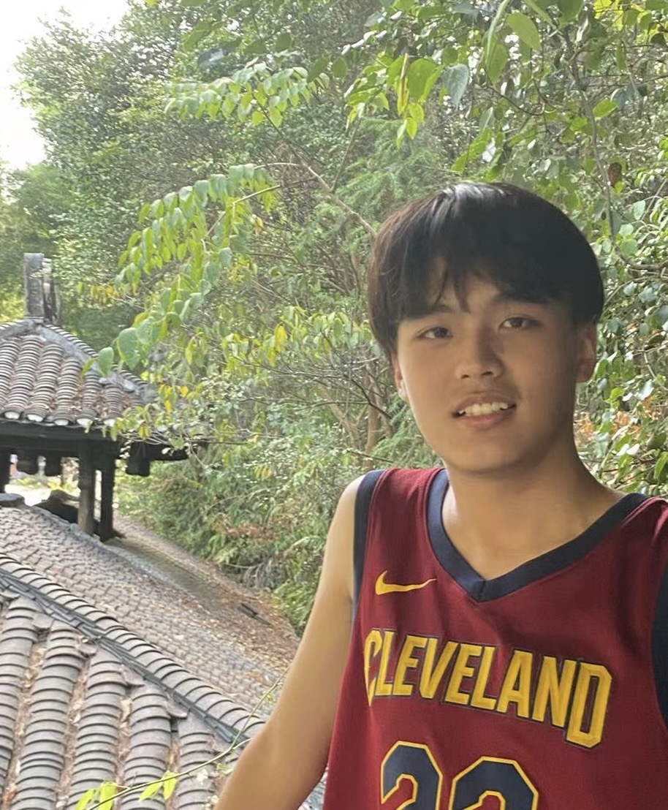

Haorui(Harry) Li
Tel: +86 155 1619 1444
Email: haoruilihust@firefox.com
Univ.: Huazhong University of Science and Technology
Wuhan, China
Welcome to my personal website! My name is Haorui Li. I’m currently a Year 3 undergraduate anticipated to graduate in the fall of 2025 at Huazhong University of Science and Technology (HUST), pursuing a dual degree in Chemistry and Computer Science.
My academic and research interests lie in the interdisciplinary fields of chemistry and computer science, especially in AI4Science. I am currently dedicated to the study of generative models and deep learning, assisting in the research on protein/enzyme and molecule discovery under the guidance of Professors Yuzhou Wu and Yao Wan at HUST.
For more information about me, please check out my CV below!